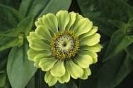

BATCAMP
Established 2023.
BAT COMPANY LTD
TYPES OF FLOWERS
- ZINNIA FLOWER
- ROSE FLOWER
- MORNING GLORY
- ALAMANDA FLOWER
- CALLA LILY FLOWER
- GARDENIA FLOWER
- ORCHID FLOWER
- ALSTROEMERIA FLOWER
- GERBERA DAISY FLOWER
- TULIP FLOWER
- PEONY FLOWER
- CARNATION FLOWER
- DAFFODIL
Zinnia blooms are multi-colored in shades of yellow, orange, white, red, pink, purple, and more. They also come in a wide variety of appearances, including a single row of petals and a luscious dome shape. They range in size from about a foot to over three feet tall.



Calla lilies come in a variety of different colors, from snow white to bright pink. They feature a beautiful trumpet shape with smooth, sword-like foliage.


Orchid flowers include several notable features, including three petals, three sepals, and a single lip that extends, which is known as a labellum. Orchids also have a waxy tube-like structure in the center of the flower called a column.

The alstroemeria, also called the Peruvian lily, features streaked or speckled blossoms in a range of colors, including white, yellow, orange, pink, and red. With their trumpet-like appearance, they resemble lilies and grow to one to three feet tall.

Gerbera daisies are daisy-like flowers that come in bright colors, including pink, red, yellow, orange, and salmon. They have a long vase life and are one of the most used cut flowers in the world.

Tulips have ruffled petals with streaks of colors and are available in a variety of colors including pink, red, yellow, orange, purple, and white. There are a wide variety of types of tulips, and they are often cultivated to achieve different characteristics.

Peonies have large, wonderfully fragrant flowers, in colors including everything from purple and pink to darker shades of red. They have a short blooming season, which only lasts about a week or so.

A double layer of petals with crinkly edges are the chief characteristics of carnations. They come in a wide variety of colors and can be dyed to practically any color and shade on earth.

Bright and fragrant flowers, daffodils bloom early in the spring. The blossoms feature six petals and a trumpet in the middle and are typically a combination of bright yellow and white.

1234 BATCAMP